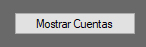
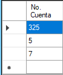
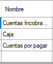
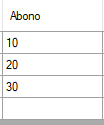
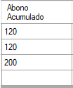
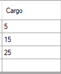
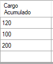
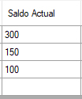
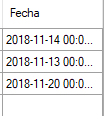

.png)
-Cierre contable permite poner los saldo actuales, abonos y cargos en 0 y acumularlos en la cuenta de saldos acumulados,
abonos acumulados y cargos acumulados respectivamente.
- Adicionalmente se permite establecer un intervalo de fecha para realizar el cierre contable, en la tabla se mostraran los datos
actuales y luego de reazlizar el cierre mostrara los nuevos resultados en 0.
- Generar Reporte crea un archivo .pdf que permite ver el cambio realizado del cierre contable.
ATENCION: Este cambio es irreversible para el sistema, se genera un backup de las cuentas con el nombre TBL_BACKUP_CIERRECONTABLE
Fecha de intervalo permite seleccionar cuentas que sean encontradas dependiendo del rango seleccionado
Mostrar cuenta, actualiza la tabla con las cuentas que se encuentren entre el intervalo de fechas

Realizar Cierre Contable, permite hacer el cambio o actualizacion en la base de datos y crear el back up del sistema
No. Cuenta: Muestra el codigo de la cuenta registrada en la base de datos

Nombre: Muestra el nombre de la cuenta registrada en al base de datos

Abono, muestra la sumatoria de bonos registrados hasta la fecha.

Abono Acumulado, muestra el total de los abonos registrados en la base de datos.

Cargo, muestra la sumatoria de cargos registrados hasta la fecha.

Cargo Acumulado, muestra el total de los cargos registrados en la base de datos.

Saldo Anterior, muestra el ultimo saldo registrado en la base de datos

Saldo Actual, muestra la sumatoria del saldo hasta la fecha registrado en la base de datos

Fecha, muestra la fecha de actualizacion de los saldos de la cuenta
